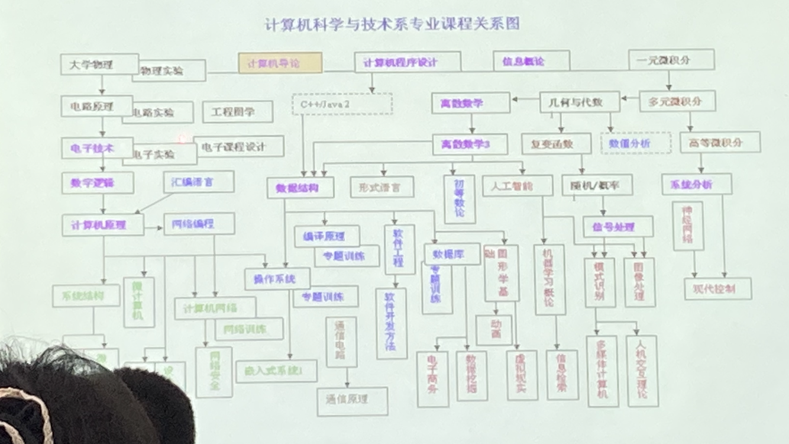
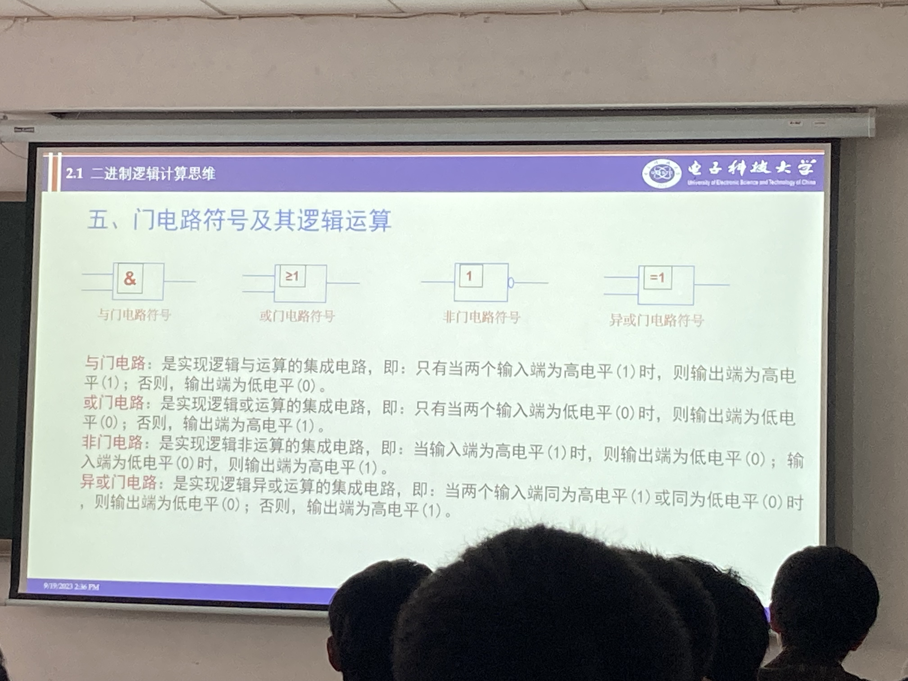
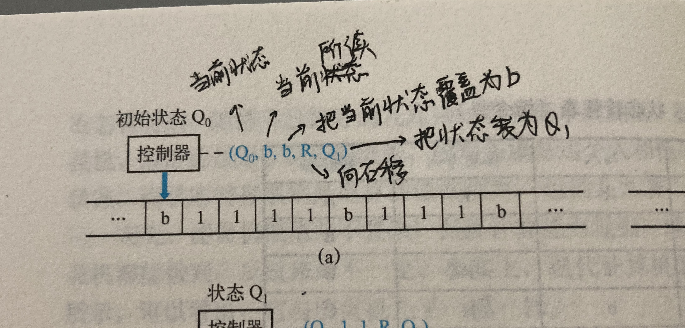
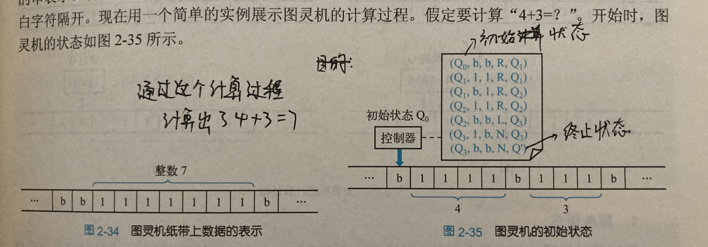
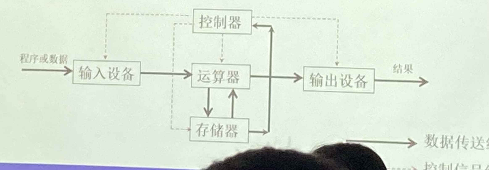
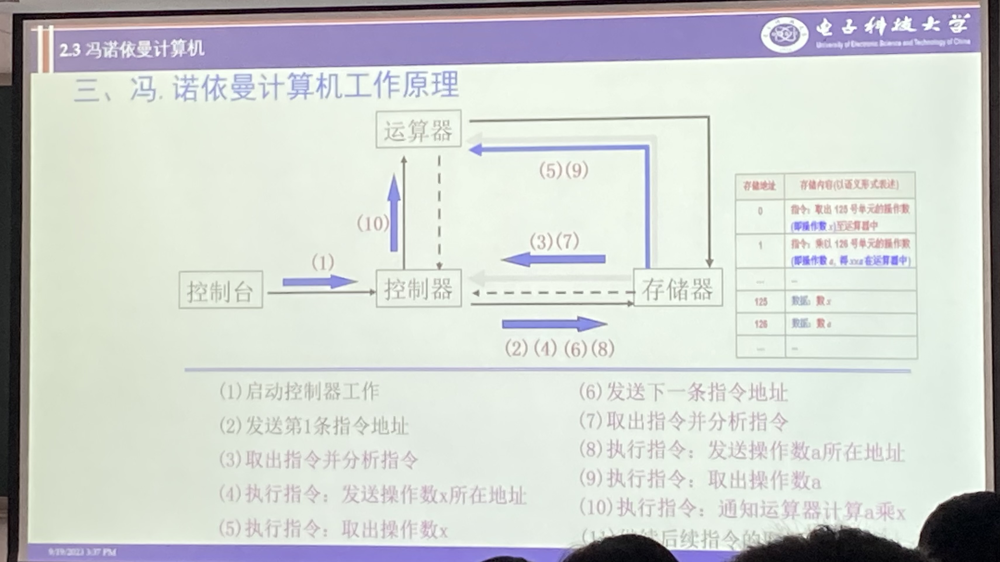

计算思维导论（左琳）
作业
作业要求PDF或word格式，文件名改成姓名+学号最后四位
23.9.12
计算思维导论是计算机技术的本质
课程
总学时：
16学时。
内容：
6个主题
1.计算与计算思维
2.计算理论与计算模型
3.计算思维方法论
4.计算思维一算法基础
5.计算思维一程序基础
6.工程伦理与职业道德
课程考核：
随堂测试、讨论、作业计平时成绩：平时考核占30%
研究报告；期末考核占70%

搞研究一定要学好数学
弄懂技术的本真
第一章 计算与计算思维
计算技术的演化
真空管 - 电子管 - 晶体管 - 继承电路时代
软件是要吧硬件用到极致
计算机技术的发展实际是硬件的发展
cpu的单核一定是串行计算（在多个进程之间迅速切换）
计算机的发展
- 首个电子计算机
- 图灵机（只是一个理论）
- 冯·诺依曼体系结构（开创二进制）
- 第二代电子计算机（应用晶体管）晶体管：放大信号
- 出现集成电路（60年代）
- 大规模集成电路（70年代）
- 超级计算机，笔记本电脑
- “第五代”计算机（现代）：人工智能，大模型/神经网络（alpha go，chatgpt）
摩尔定律：大约每18个月，集成电路中的晶体管的数量就会翻倍，价格降低一倍
计算机语言
1969 C，1983 C++，1991 python，1995 java
计算机程序
ide software：VS，Xcode等
新计算技术
大数据技术
大数据的来源
各类互联网平台
大数据的特征
多样性，复杂性，快速增长，实时/快速
大数据的架构
预处理（数据清洗） - 数据分析 - 数据存储
大数据的处理技术：
采集 - 预处理 - 数据的存储与管理 - 数据的分析与挖掘 - 数据展现
应用：
siri，数据挖掘技术，聚类K-means，机器学习
注：机器学习包括监督学习、非监督学习、强化学习
云计算
分布式处理
并行处理
23.9.13
1. 逻辑计算
与计算：同为真才为真
或运算：一个为真即为真
非运算：取反相反
异或运算：同为假，异为真

2. 图灵机的运作原理


3. 冯·诺依曼体系结构
冯.诺伊曼在图灵等人工作的影响下，提出“存储程序式”电子数字计算机的基本结构与工作原理，给出计算机由控制器、运算器、存储器、输入设备、输出设备5个组成部分。现代计算机基本上都是采用冯.诺伊曼计算机体系结构。

基本思想
- 指令和数据用二进制表示，指令由操作码和地址码组成，它们通过输入设备进入计算机。
- 指令和数据以相同的方式存放于存储器，可按地址寻访
- 控制器负责解释指令，连续自动执行。
- 运算器负责执行指令的运算操作。
- 计算机处理结果数据通过输出设备展现给用户。
工作原理

特点
- 计算机以运算器为中心，输入、输出设备与存储器之间的数据传送都要经过运算器。
- 采用存储程序方式存取访问代码与数据。
- 存储器采用固定字长、顺序线性编址的一维结构。
- 指令是由操作码和地址码组成。
- 指令与数据均以二进制表示，并采用二进制运算。
- 硬件与软件完全分开，硬件在结构和功能上是不变的，完全靠编制软件来适应用户的处理需求。
4. 可计算性与计算复杂性
计算，算法，计算过程
- 计算：计算是依据一定的法则对有关符号串进行变换的过程。计算是从已知符号开始，一步一步地改变符号串，经过有限步骤，最终得到一个满足预定条件的符号串的过程。
- 算法：算法是解决问题的计算方法及其处理步骤
- 计算过程：① 计算机以运算器为中心，输入、输出设备与存储器之间的数据传送都要经过运算器。 ② 采用存储程序方式存取访问代码与数据。 ③ 存储器采用固定字长、顺序线性编址的一维结构。 ④ 指令是由操作码和地址码组成。 ⑤ 指令与数据均以二进制表示，并采用二进制运算。 ⑥ 硬件与软件完全分开，硬件在结构和功能上是不变的，完全靠编制软件来适应用户的处理需求。
计算理论
计算理论是一种用来研究计算过程及其功效的数学理论。
计算理论主要包括算法、可计算性理论、计算复杂性理论、自动机理论和形式语言理论等。
可计算理论
可计算性理论作为计算理论的一个分支，研究在不同的计算模型下哪些问题能够被计算机解决，哪些问题是不可能用计算机解决
国庆作业
- 图灵机具有哪些计算能力？
评估一阶逻辑与模拟任何其他图灵机的计算能力
- 现代计算机在哪些方面突破了冯诺依曼计算机的限制？
现代计算机可以实现并行多线程计算，可以实现分布式计算。而且现代计算机已经发展出克人工智能，这是冯诺依曼计算机无法做到的。
学术论文的撰写与投稿
挂牛人的名字
引用：要引用比自己层级更高的人或组织的文章
不能一稿多投，翻译成不同语言也不行